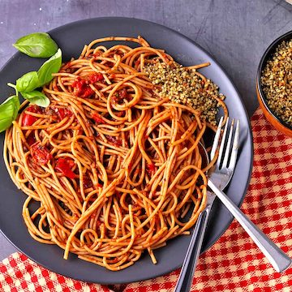

Spaghetti arrabbiata recipe

Description
Speedy spicy spaghetti arrabbiata is a quick pasta dinner harnessing the flavor of dried herbs, fresh garlic, and a sweet kick of balsamic vinegar. This simple arrabbiata sauce recipe is also versatile. With a few modifications, you can make multiple pasta dishes using the same quick method.
Ingredients
- Garlic
- Oregano
- Basil
- Thyme
- Red chili flakes
- Canned tomatoes
- Balsamic vinegar
Steps
- Preheat a skillet or pan to medium. Add the garlic, oregano, basil, thyme, and chili flakes. Stir for 30 seconds until everything is mixed.
- Add the tomatoes and bring the ingredients to a slow simmer. Use a wooden spoon to break up the tomatoes and remove any bits of garlic herbs from the bottom of the pan.
- Cover the pan and allow the tomatoes to simmer for 10 minutes until the tomatoes start to break down and the sauce thickens.
- Remove the cover and mix in the Balsamic and fresh basil if using.
- Taste and adjust the spices. Add salt and/or pepper if desired.
- Drain the spaghetti and combine it with the sauce before serving or divide it amongst 4 plates and top it with the sauce. Add more fresh basil if desired.